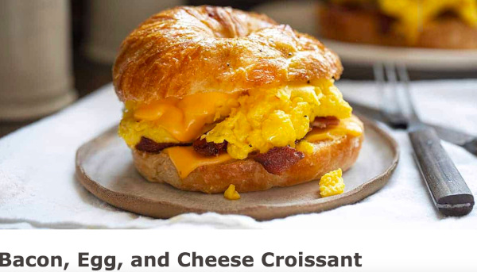

Bacon Egg and Cheese

Breakfast of champions
This sometimes underestimated meal is a quick and easy breakfast and one of my favorites.
Ingredients
- Bacon
- Eggs
- Cheese
- Herbs & Spices
- Croissant
Steps
- Put the desired amount of bacon in the frying pan on high heat
- When the bacon is crisp set the heat to medium and put the bacon on a plate
- Crack the desired abount of eggs in the pan with the bacon fat
- Season with herbs and spices my favorites are oregano, thyme, garlic powder and chili flakes
- When the yoke hardens flip the egg and put cheese on top followed by the bacon
- Cut the croissant in half and place the bacon egg and cheese in the middle
- Enjoy